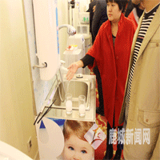

新闻中心 |
温州润新用创新领航水处理行业发展
温州网鹿城支站讯 在北京，润莱民用水处理产品营销与技术研讨会上，一家来自鹿城的企业作为我国水处理行业的领航者在这里发声——“我们让‘家庭全屋净水’这种曾被誉为‘贵族消费’的生活方式走入了寻常百姓家，使越来越多的人享受到了健康的、高品质的生活……”它就是温州润新机械制造有限公司，一个从投资四万元的小作坊到跻身全球三大水处理控制阀专业制造商之一的行业传奇。 大浪淘沙，和润新同期创立并且曾十分活跃的企业，如今许多已如泡沫崩散，而润新却始终保持着突飞猛进的势头，在行业内影响力持续蹿升。 截至目前，润新已在全球53个国家和地区建立营销渠道，产品已经出口全球89个国家和地区，在国内市场占有率超过75%，产品广泛应用于工业、民用领域。而由公司自主研发，国内唯一拥有完全自主知识产权的“润新阀”依托独有的端面密封技术，已获得17个国家及中国台湾地区发明专利授权，并拥有国内专利42项。润新的另一个品牌润莱，则获得包括美国、欧盟等99个国家的商标注册。
|
第三届净水峰会推动水行业健康发展 |
|
环保行业:立法亮剑出鞘,水处理再迎新规 |
|
水治理 |
|
安徽省政协举行加快推进水污染防治界别协商会
摘要 10月28日上午，安徽省政协举行加快推进水污染防治界别协商会。安徽省政府副省长周春雨，省政协副主席、省委政法委书记徐立全出席会议并讲话。 |
水资源介绍